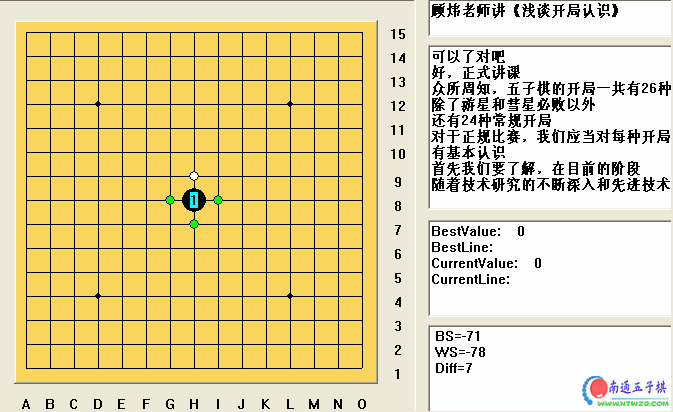

顾炜老师讲《浅谈开局认识》
#1 顾炜老师讲《浅谈开局认识》 作者：有志青年 发表时间：2006-11-30 15:23:51

几点说明：
1、原稿是orc的讲课实录，现在转化为lib
2、这个是网上搜集的，只能称之为“据说”是顾炜老师的讲课稿，没有证实
3、该课好像是2004年左右的内容
 顾玮老师讲《浅谈开局认识》.rar
顾玮老师讲《浅谈开局认识》.rar#2 Re:顾炜老师讲《浅谈开局认识》 作者：潇洒 发表时间：2006-11-30 17:12:55
看看#3 Re:顾炜老师讲《浅谈开局认识》 作者：26 发表时间：2006-11-30 20:19:41
：））#4 Re:顾炜老师讲《浅谈开局认识》 作者：cjh199 发表时间：2006-12-2 20:34:35
学习学习#5 Re:顾炜老师讲《浅谈开局认识》 作者：九命猫 发表时间：2006-12-5 16:25:59

#6 Re:顾炜老师讲《浅谈开局认识》 作者：yidefei 发表时间：2006-12-8 22:47:03
还有这点等事？还是看一下为好！#7 Re:顾炜老师讲《浅谈开局认识》 作者：南通小小包 发表时间：2006-12-22 21:41:12

#8 Re:顾炜老师讲《浅谈开局认识》 作者：bladee 发表时间：2006-12-27 23:15:56
学习下
#9 Re:顾炜老师讲《浅谈开局认识》 作者：棋乐穷 发表时间：2006-12-28 13:53:35
谢谢老师#10 Re:顾炜老师讲《浅谈开局认识》 作者：天外天 发表时间：2006-12-31 13:24:09
跟老师学学
#11 Re:顾炜老师讲《浅谈开局认识》 作者：什锦菜 发表时间：2007-3-6 15:38:36

#12 Re:顾炜老师讲《浅谈开局认识》 作者：笨蹦蛋 发表时间：2013-3-14 19:50:28
雪中送炭啊，谢谢老师